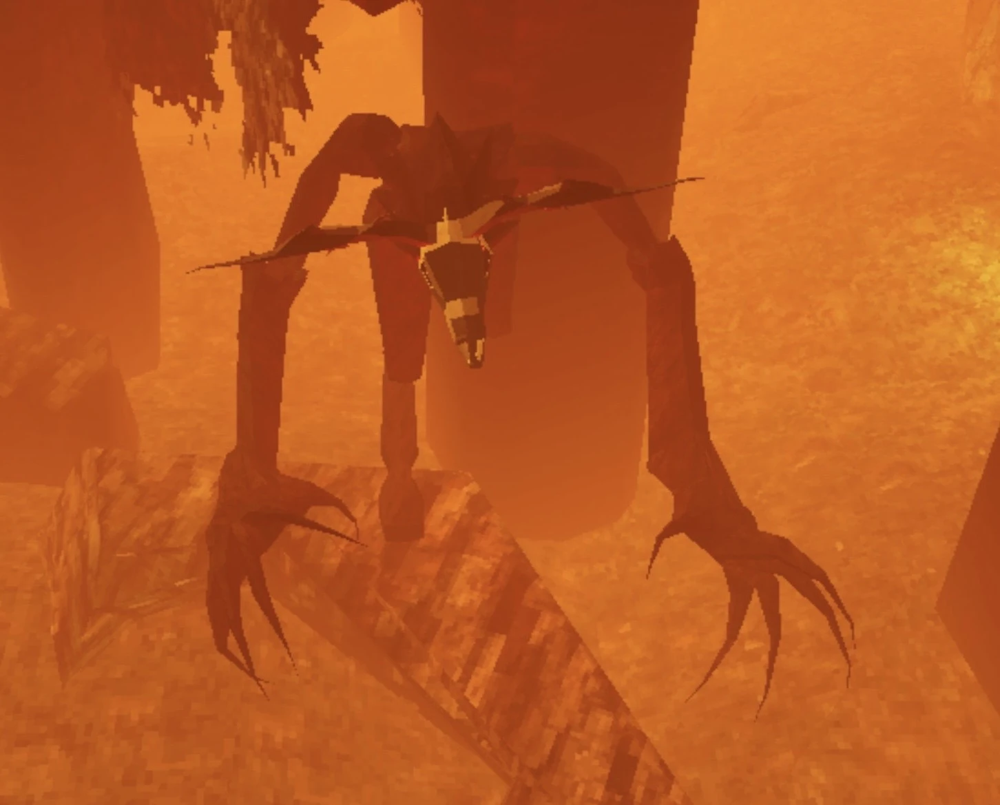
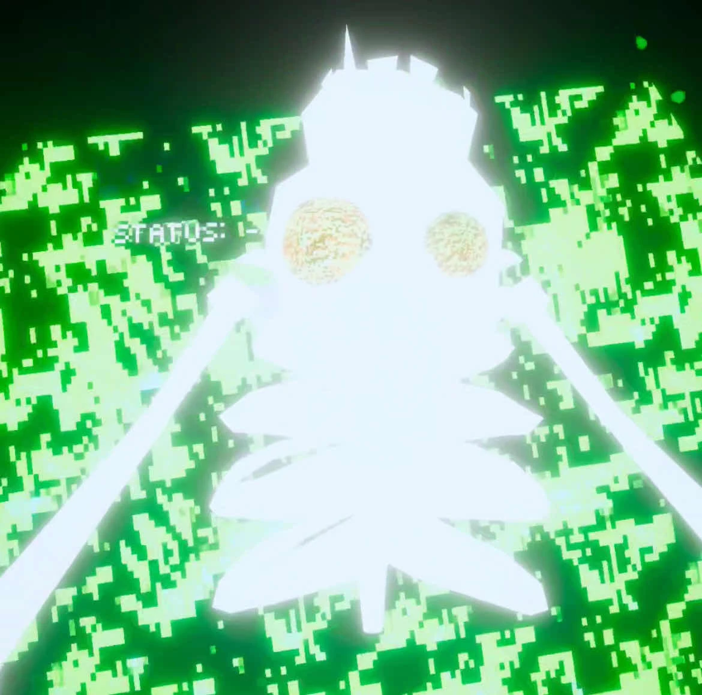

WELCOME TO AIDEN'S CORNER
FEARING
GORILLA.
Know what’s out there.
Meet the creatures. Explore the maps. Keep the field guide close when things get strange.
The guide works right here in your browser.

17MONSTERS
11GODS
09SHRINES
11MAPS

YOUR CREATURE & WORLD ARCHIVE
Pick a creature.
Take a closer look.
Compare eight cards at once. Switch between monsters, gods, shrines, and maps. Click a card to expand it, or double-click a picture to zoom.
Open the guide as a full pageEXPLORE RIGHT HERE
The Field Guide
FEARING GORILLA / COMMUNITY REFERENCE
Community reference based on the supplied guide. Source notes and image credits are included on the cards.
KEEP A COPY
Bring the guide along.
Download the ZIP, extract it, and double-click Install_Field_Guide.vbs to add a Windows desktop shortcut.